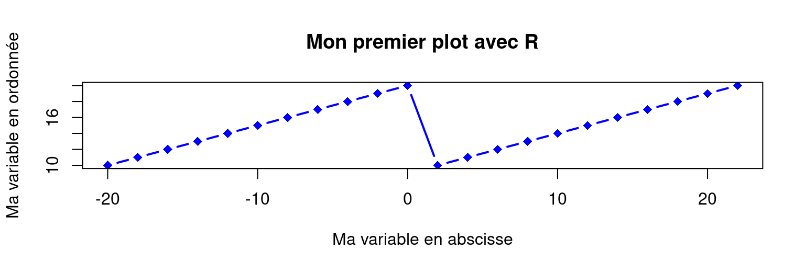

Programmation Orientée Objet ?
Tout ce que l’on crée dans R sont des objets…
Mais il ne s’agit pas (comme Python) d’un langage de POO!
La Programmation Orientée Objet est un paradigme de programmation basé sur le concept d’objets, qui peuvent contenir des données et métadonnées (attributs), et qui sont associés à des procédures, souvent appelées méthodes.
Il est néanmoins possible de faire de la POO avec R…
Créer un objet
Pour créer un objet, donnez lui un nom et assignez-lui un contenu avec le symbole :
<-
## [1] 30
## [1] 30
Créer un objet
Assignez différents types de données :
| numeric |
nombre |
3 ou 4.23 |
| integer |
nombre entier |
3 |
| double |
nombre double |
4.23 |
| logical |
logique ou booléen |
TRUE ou FALSE |
| string |
chaîne de caractères |
“Hello” |
| factor |
string (modalités prédéfinies) |
“Hight” |
| date |
date formatée |
2020-12-14 |
| NA |
absence de valeur (tout type) |
NA |
Créer un objet
## [1] "Date"
## [1] "2020-10-08"
Les fonctions
Une fonction est un objet
Une fonction contient une série de commandes (code) qui effectuent une tâche prédéfinie. Elle prend des informations (arguments) en entrée et renvoie un résultat
## [1] "Julie aime Thomas"
## [1] "Julie aime Tristan"
Les fonctions
Les fonctions peuvent être :
- Mises à disposition par le R base (fonctions primitives ou standards)
- Mises à disposition par un package
- Développées en local par vous-même.
Elles s’utilisent toujours de la même façon : nom()
## [1] "Hello"
Les arguments
Le plus souvent, des arguments doivent être renseignés pour utiliser une fonction. Il suffit de leur attribuer une valeur.
x <- seq(from = -20, to = 22, by = 2)
y <- rep(10:20, 2)
plot(x , y , type = "b",
pch = 18, cex = 1.2, lwd = 2, col= "blue",
main = "Mon premier plot avec R",
xlab = "Ma variable en abscisse", ylab = "Ma variable en ordonnée")

Les objets
De nombreux objets R adaptés aux différents types de données :
- Vector - liste d’éléments de même nature
- Data.frame - Tableau de données
- Matrix - Matrice
- Array - Ensemble de matrices
- List - Liste d’objet
- Factor - vecteur avec une liste de modalités prédéfinies
- Simple feature - Données géographiques
- Time serie - Série temporelle
- …
Vector
Le vecteur est l’objet de base de R. Il permet de stocker un ou plusieurs éléments du même type.
La fonction c() permet de construire un vecteur de plusieurs éléments,
## [1] "Martina" "Leo" "Inès" "Joshua"
Vector
Pour naviguer dans cet objet unidimensionnel, utilisez les crochets.
## [1] "Leo" "Joshua"
## [1] "Martina" "Inès"
Data.frame
Le data.frame correspond au tableau de données classique. il se compose de plusieurs colonnes pouvant contenir des données de nature différente. Chaque colonne d’un data.frame est un vecteur.
# Construction de plusieurs vecteurs de même longueur
nom <- c("Modibo Keïta", "Moussa Traoré", "Alpha Oumar Konaré")
date_naissance <- c("1915-06-04", "1936-09-25", "1946-02-02")
annee_arrivee_pouvoir <- c(1960, 1968, 1992)
duree_au_pouvoir <- c(8, 23, NA)
parcours_militaire <- c(FALSE, TRUE, FALSE)
Utilisez la fonction data.frame() pour construire un tableau
Data.frame
Utilisez la fonction data.frame() pour construire un tableau
## nom date_naissance annee_arrivee_pouvoir duree_au_pouvoir
## 1 Modibo Keïta 1915-06-04 1960 8
## 2 Moussa Traoré 1936-09-25 1968 23
## 3 Alpha Oumar Konaré 1946-02-02 1992 NA
## parcours_militaire
## 1 FALSE
## 2 TRUE
## 3 FALSE
Data.frame
Utilisez les crochets pour naviguer dans un tableau :
MyTab[ ligne , colonne ]
## nom parcours_militaire
## 2 Moussa Traoré TRUE
Data.frame
Vous pouvez également utiliser le signe $ pour séléctionner une colonne :
MyTab$date_naissance
## [1] "1915-06-04" "1946-02-02"
Data.frame
Utilisez les différents opérateurs pour sélectionner par condition :
## nom date_naissance annee_arrivee_pouvoir duree_au_pouvoir
## 3 Alpha Oumar Konaré 1946-02-02 1992 NA
## parcours_militaire
## 3 FALSE
list
Une liste permet de stocker plusieurs objets (peu importe le type) en un seul. Une liste est une collection d’objet.
Utilisez la fonction list() pour construire une liste
# Vecteur de chaînes de caractères
noms <- c("Martina", "Leo", "Inès", "Joshua")
# Vecteur de numeric
ages <- c(21, 20, 25, 18)
# data.frame
tablo <- data.frame(noms, ages)
# fonction
fonction_hello <- function() { print("Hello") }
# Construction d'un objet list
Ma_list <- list(noms, ages, tablo, fonction_hello)
C’est un super objet très utile et puissant.
Cet objet est utilisé par plusieurs packages de référence
List
Pour naviguer dans une liste, utilisez des doubles crochets :
Ma_list[[ index ]]
## [1] "Martina" "Leo" "Inès" "Joshua"
## [1] 18
R base
Le langage R offre 2292 fonctions de base* stockées dans 7 packages standards, installés et chargés automatiquement :
- base = 1233 fonctions de base qui permettent à R de fonctionner comme un langage
- utils = 212 fonctions utilitaires (ex : installation de package, import/export…)
- stats = 448 fonctions statistiques pour les calculs et la génération de nombres aléatoires
- grDevices = 109 fonctions pour la gestion des périphériques graphiques
- graphics = 87 fonctions graphiques
- methods = 203 fonctions pour définir des méthodes et classes pour les objets R
- datasets = 416 jeux de données d’exemples
596 fonctions supplémentaires* sont également mises à disposition par l’intermédiaire de 5 autres packages pré-installés (grid, splines, stats4, tcltk, tools), mais qui ne sont pas chargés automatiquement.
* Calculé le 2021-08-30
R base
Les fonctionnalités standards (ou primitives) proposées par R permettent de réaliser beaucoup de choses
Il est cependant parfois nécessaire d’installer des packages
pour profiter de certaines fonctionnalités :
- Gérer des types de données spécifiques (ex : géographique, image, son…)
- Optimiser son code (fonction codées en C++, parallélisation…)
- Interagir avec d’autres outils (web scraping, production de support…)
- Utiliser des méthodes d’analyses spécifiques (ex : réseau, séquence, NLP…)
- Produire des représentations graphiques particulières et/ou élégantes
Packages du CRAN
18095* packages sont disponibles sur le Comprehensive R Archive Network
L’installation d’un package peut se faire en clic-bouton avec Rstudio. Cette opération n’est à réaliser qu’une fois, sauf si vous souhaitez mettre à jour le package.
Pour utiliser les fonctions du package, chargez la librairie :
Il est nécessaire de charger la librairie à chaque nouvelle session R
* Calculé le 2021-08-30
Autres ?
Le Comprehensive R Archive Network est le système officiel de stockage et de mise à disposition des packages R. Il existe d’autres sources :
- Bioconductor qui concentre des packages portant sur l’analyse des données génomiques
- R-forge qui est une plateforme orientée vers les développeurs
- GitHub qui est un service web d’hébergement et de gestion de développement de logiciels, utilisant le logiciel de gestion de versions Git
De nombreux packages fonctionnels et très intéressants sont uniquement disponibles sur GitHub… Attention, ils ne bénéficient pas du système de contrôle offert par le CRAN !
GitHub
GitHub permet aux développeurs de programmer de manière collaborative. Beaucoup de développeurs y partagent leur package, et profitent ainsi de contributions externes

GitHub
Un package peut connaître une longue période de développement. Cela ne l’empêche pas d’être opérationnel. C’est par exemple le cas du package apinsee destiné à faciliter l’authentification aux API de l’INSEE. Pour l’installer depuis GitHub :
Sur Windows, il est nécessaire d’installer Rtools pour utiliser les packages qui interagissent avec le système d’exploitation (remotes, devtools…)
Aide et documentation
C’est l’un des points forts du langage
Inclusion et partage sont au coeur de la communauté R
Les réponses à vos questions existent forcément
Mais où et comment chercher ?
Auto-complétion
La fonctionnalité d’auto-complétion proposée par Rstudio peut dans un premier temps être très efficace. Utilisez la touche tab.
Auto-complétion

Documentation officielle
Les packages (base et CRAN) sont accompagnés d’une documentation.
Vous pouvez y accéder en ligne de commande ou en clic-bouton :
D’autres fonctions de recherche et
d’accès à la documentation sur
r-project.org
Vignette, cheatsheet & site web
Certains packages proposent de la documentation plus digeste, comme une vignette, une cheatsheet, voire même un site web
Vignette
La vignette est un document qui décrit en profondeur le concept et le fonctionnement d’un package. Il y a parfois plusieurs chapitres…
Cheatsheet
La Cheatsheet (antisèche) est un format crée par Rstudio. Il s’agit d’un document qui résume brièvement (une ou deux feuilles) les fonctionnalités d’un package.

Retrouvez la majorité des cheatsheets sur Rstudio
Site web
De nombreuses librairies de référence possèdent leur site web
La communauté R
La communauté R est très active et s’avère prolifique en matière de partage et de documentation :
Conférences, groupes d’utilisateur.rice.s, manuels, blogs, forums, agrégateurs, MOODLE, MOOC, vidéos, listes de diffusion, réseaux sociaux…

Il y en a pour tous les goûts !
Les manuels
Il existe des centaines de manuels dans différentes langues.
Certains sont focalisés sur une discipline ou une fonctionnalité.
Quelques manuels généralistes :
Quelques manuels thématiques :
Agrégateurs & listes
Plusieurs sites internet collaboratifs permettent
l’agrégation de contenu ou l’inventaire de ressources.
Agrégateurs de contenu
- Rweekly - agrégateur de ressources diverses
- R-bloggers - agrégateur de billets de blog d’actualité et de tutoriels
- Rzine - site de référencement de documentation sur la pratique de R en SHS
- …
Inventaires de ressources :
- Awesome R - liste collective de packages et d’outils
- Frrrenchies - liste de ressources francophones ou utiles pour les Français.
- …
Blogs
Certains blogs, parfois très complets, sont de véritables mines d’or !
Forums & listes de diffusion
Vous avez une question ?
Forums
- Stackoverflow - forum d’entraide généraliste
- Grrr - plate-forme Slack de discussion instantanée francophone sur R
- Cirad - forum francophone d’échange sur R
- …
Listes de diffusion
- R-soc - utilisation du logiciel R en sciences sociales
- Semin-R - liste de diffusion du groupe d’utilisateur.rice.s semin-R
- …
Réseaux sociaux
La communauté R est très active sur les réseaux sociaux

Suivez la communauté
sur twitter
#rstat
Plusieurs chaînes Youtube existent :